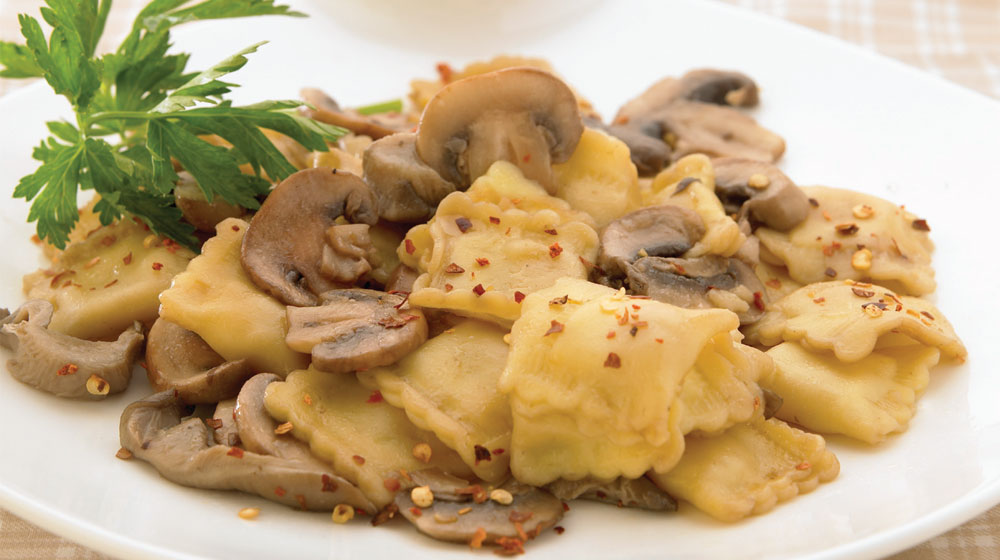

Ravioles

Ravioles con Hongos Viaja hasta Italia desde tu cocina y prepara una deliciosa receta de ravioles con hongos sofritos, te sorprenderá lo fácil que es.
Ravioles con Hongos Viaja hasta Italia desde tu cocina y prepara una deliciosa receta de ravioles con hongos sofritos, te sorprenderá lo fácil que es.
Calienta 2 litros de agua con sal y cuando suelte el hervor, baja el fuego e integra los ravioles.
Cocina hasta que estén cocidos, retíralos con una espumadera y colócalos en un escurridor; reserva.
En una cacerola con aceite acitrona la cebolla, agrega los champiñones y las setas, cuando comiencen a cambiar de color añade el chile, los ravioles y la salsa de soya; revuelve con cuidado y rectifica la sazón.